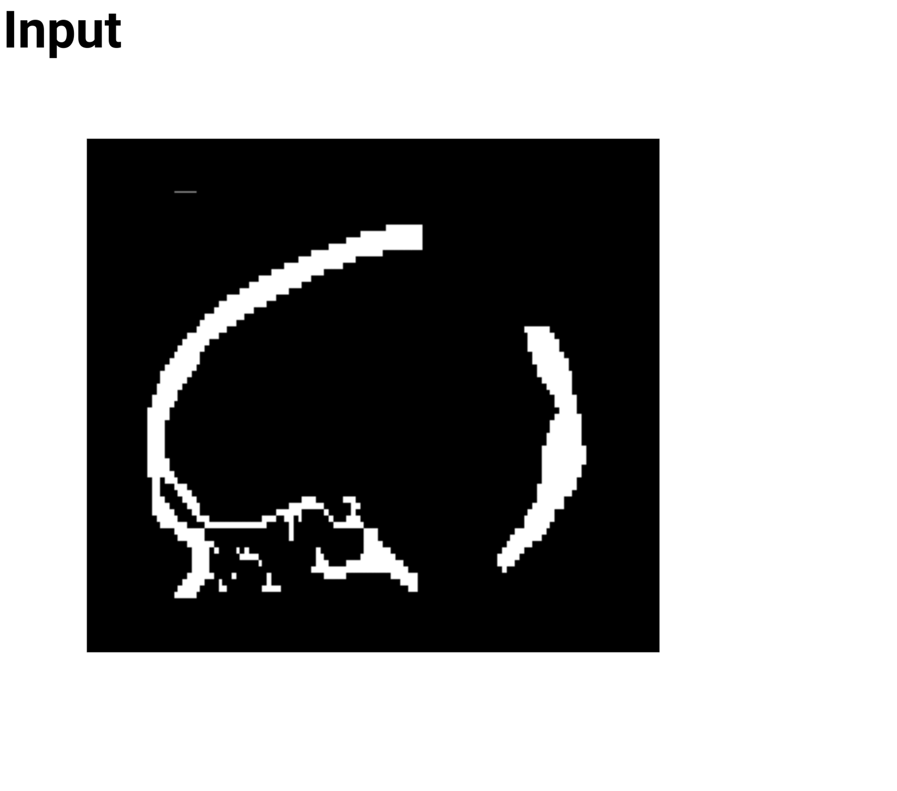
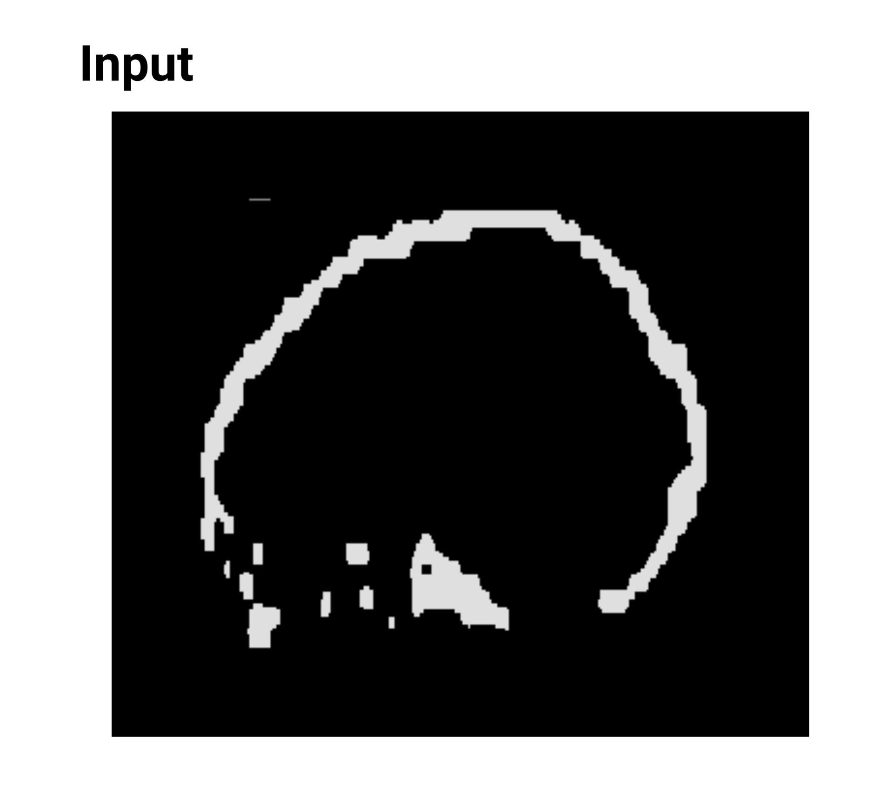
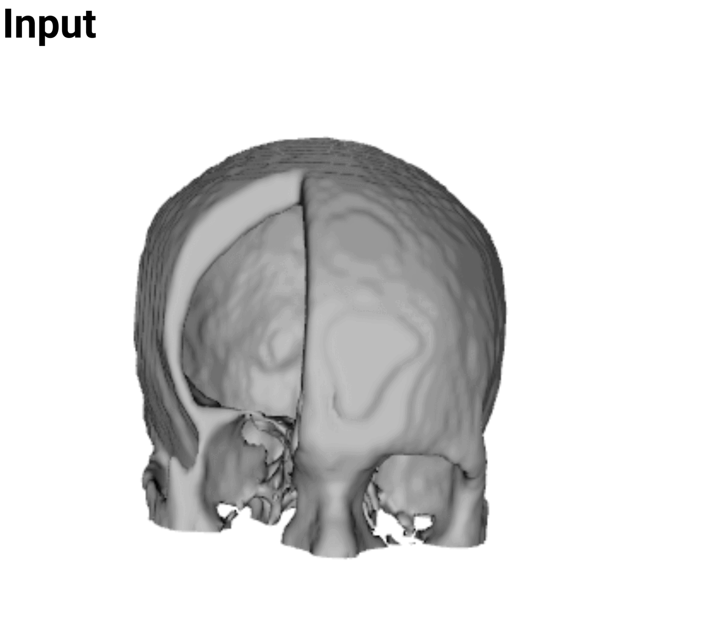

Uncertainty-Aware Skull Reconstruction
Uncertainty estimation and probabilistic skull shape reconstruction using Bayesian neural networks.
Scientific Reports, Volume 16, Article 16383, 2026




Probabilistic reconstruction for missing skull anatomy.
This work studies uncertainty-aware deep learning for 3D skull reconstruction in cranioplasty. The method uses a 3D Bayesian U-Net to jointly predict missing skull structures and estimate epistemic uncertainty through Monte Carlo approximation with Flipout layers. By pairing voxel-grid reconstruction with uncertainty maps, the system provides both a candidate skull shape and spatial evidence about where the model is more or less confident.
Bayesian neural networks for 3D shape completion.
The codebase supports cranial completion, facial bone completion, and skull shape super-resolution. Training and inference operate on volumetric NIfTI data, while visualization scripts map voxel predictions and uncertainty values back to inspectable 3D surfaces.
Flipout layers model weight uncertainty while preserving the encoder-decoder structure used for dense volumetric prediction.
Repeated stochastic forward passes produce mean reconstructions and epistemic variance maps.
Prediction and uncertainty volumes can be converted to meshes for qualitative inspection and analysis.
Qualitative reconstruction examples.
Examples across cranial defects, facial defects, and super-resolution scenarios.


Implementation and reproducibility.
The official implementation includes model definitions, data loaders, training and inference scripts, evaluation utilities, and visualization tools for mesh-based inspection of uncertainty.
Cite this work.
@article{li2026uncertainty,
title = {Uncertainty estimation and probabilistic skull shape reconstruction using Bayesian neural networks},
author = {Li, Jianning and Sengupta, Agniva and Zachow, Stefan},
journal = {Scientific Reports},
volume = {16},
number = {16383},
year = {2026},
month = {May},
doi = {10.1038/s41598-026-54679-7},
url = {https://www.nature.com/articles/s41598-026-54679-7}
}